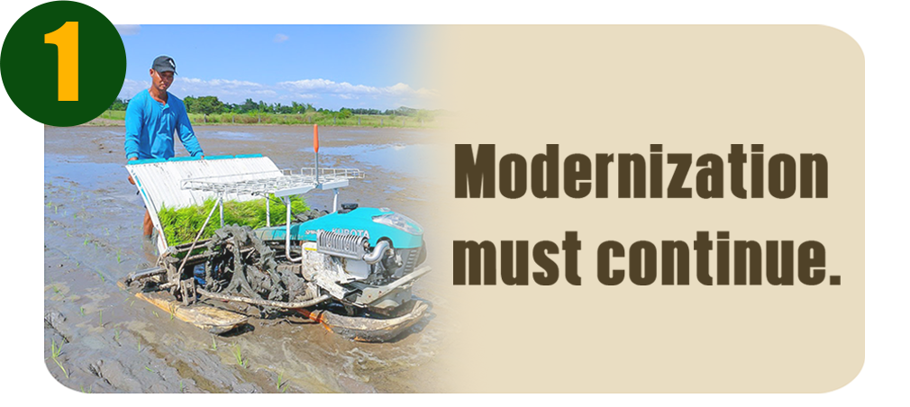
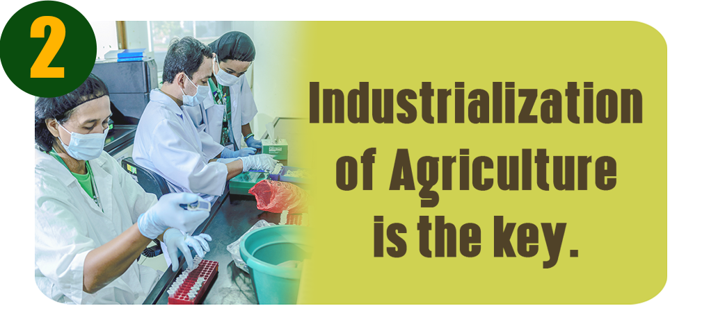
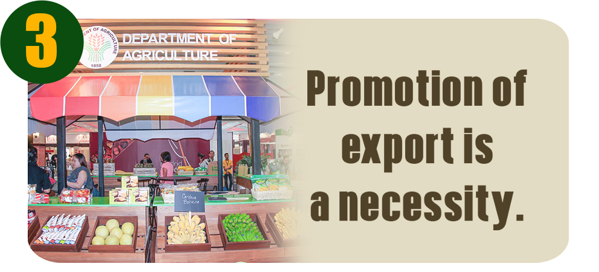
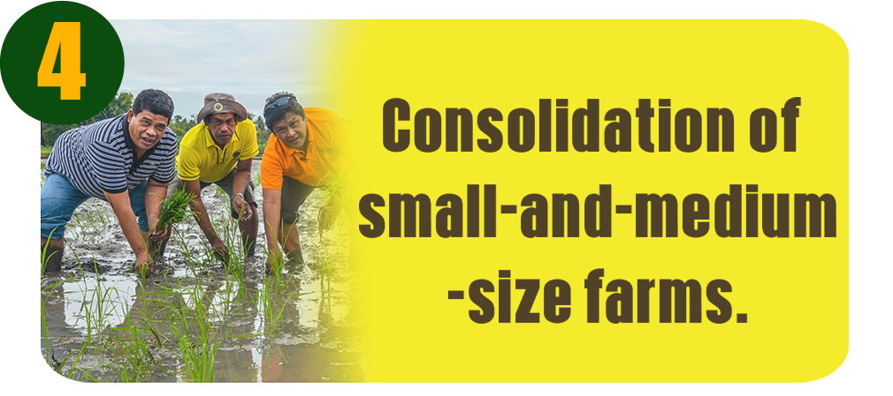
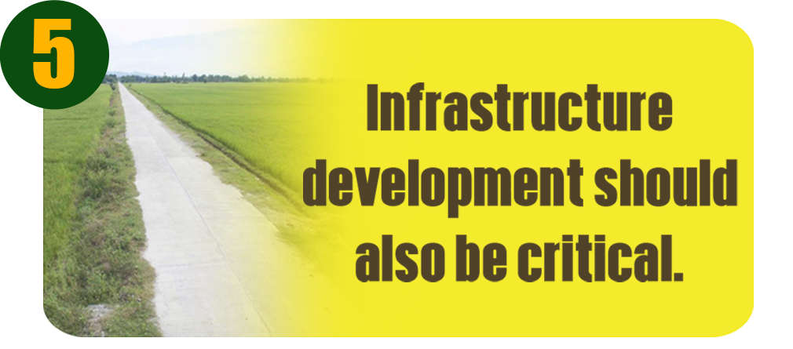
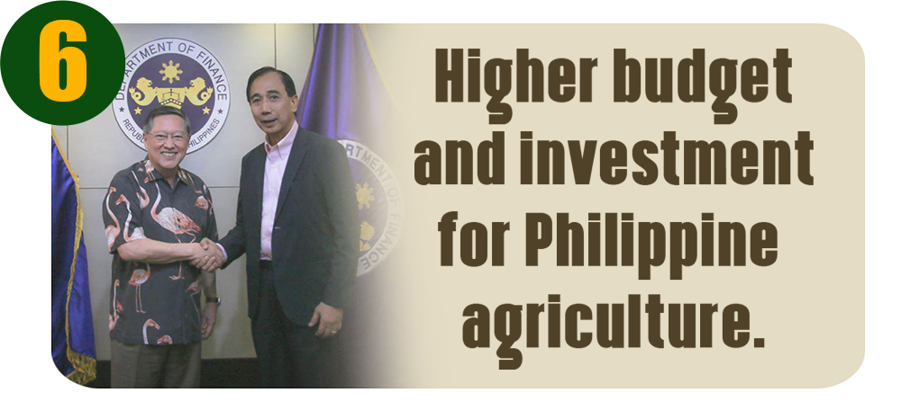
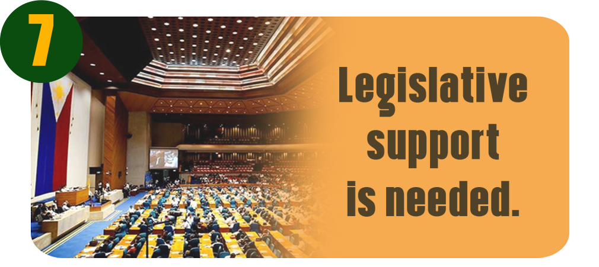
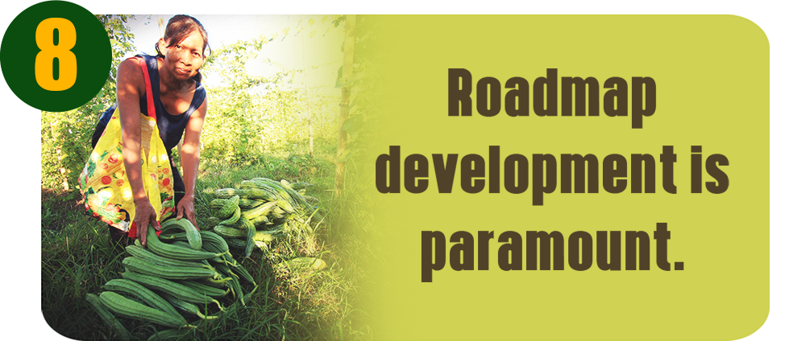

1. Mordernization Must Continue
Image from: http://www.da.gov.ph/wp-content/uploads/2016/09/Paradigm-1.png
Modernization and the use of modern technology must also cover all crops, including those with export potential in processed or value-added form like coffee, cacao, cassava, tropical fruits, rubber, among others. Relative to that, there is a need to diversify crop production in the Philippines as about 80 percent of the country’s farmlands are devoted to only three crops: rice, corn, and coconut.
Agripreneurship should also form part of the paradigm to modernize Philippine agriculture, as farming and fisheries should be treated as business undertakings or industries. Agripreneurship is also one of the components to industrialize Philippine agriculture.
2. Industrialization of Agriculture

Agriculture must be treated as an industry, with the objective of industrializing the value chain of every agricultural commodity. While productivity increase is a major objective, it is equally important to produce more income by value adding, processing, manufacturing, and developing markets for both raw and processed agricultural products.
There is also a need to engage the private sector in investing and setting up of more agri-based industries in the countryside and developing markets for agriculture products.
Relative to the industrialization of Philippine agriculture is creating the framework for the digitization of farming and agribusiness activities in the country where credit is made available, affordable and accessible.
3. Promotion of Exports

The country should have a systematic and long-term strategy in developing and promoting exports of raw and processed agricultural products. This would require achieving economies of scale in on-farm production that would generate sustained quantity and quality of export products.
The private sector’s role will be essential in developing and promoting agricultural products. At present, the Philippines only has two agricultural products that earn at least $1 billion per year in export receipts: bananas; and coconut products (mostly in oil form). Thailand has 13 types of farm exports earning over $1 billion each year, Indonesia has five, and Vietnam has seven.
A convergence of efforts of the Department of Agriculture, and the Department of Trade and Industry including other departments will be necessary.
4. Farm Consolidations
The government must promote and support farm consolidation arrangements to bring about economies of scale, particularly for crops that require mechanization and massive use of technology. These schemes include block farming, trust farming, contract farming, and corporative farming that will make farming more efficient, where technology is used, where cost of production is reduced, and farm productivity and incomes are increased.
5. Infrastructure Development

Agricultural areas need infrastructure development and logistics to improve their linkages to the urban/domestic and export markets. Thus, a “Build, Build, Build” program is also a must for agriculture.
There is also a need to engage the private sector in a “build and transfer” scheme to accelerate the development of national irrigation systems.
6. Higher Budget and Investments for Agriculture
The government and the private sector with the strong and popular support from the citizenry, must provide the necessary budget and investment to grow and develop Philippine agriculture. The increased budget will help unlock the bigger potential contribution of agriculture and agribusiness to the economy, including more employment opportunities.
7. Legislative Support
The country’s agriculture sector needs the help of both the Senate and the House of Representatives, for policy and structural reforms that need to be legislated and institutionalized.
8. Roadmap Development

The government, through the Department of Agriculture, should take the lead in generating the “big ideas” for the roadmap, and should solicit inputs from the private sector and other stakeholders.
The roadmap should also actively involve the private sector, which may have more access to the export markets and funding for research for development.
A value-chain approach to level up Philippine agriculture, while making sure the smallholders also earn their fair share of the fruits of production along the value chain.
Images Used:
https://www.lonelyplanet.com/philippines/north-luzon/banaue-and-the-rice-terraces - cover
http://www.da.gov.ph/wp-content/uploads/2019/08/header-1.jpg
http://www.da.gov.ph/wp-content/uploads/2016/09/Paradigm-1.png
http://www.da.gov.ph/wp-content/uploads/2016/09/Paradigm-2.png
http://www.da.gov.ph/wp-content/uploads/2016/09/Paradigm-3.png
http://www.da.gov.ph/wp-content/uploads/2016/09/Paradigm-4.png
http://www.da.gov.ph/wp-content/uploads/2016/09/Paradigm-5.png
http://www.da.gov.ph/wp-content/uploads/2016/09/Paradigm-6.png
http://www.da.gov.ph/wp-content/uploads/2016/09/Paradigm-7.png
http://www.da.gov.ph/wp-content/uploads/2016/09/Paradigm-8.png
Share to: